Attack
Deals damage to enemies.
Your deck
Cards are how you fight, how you protect yourself, and how you grow stronger. This page explains the rules that apply to every card. It does not list each card.
Every card has the same parts. Here is an example card, Violence, with its parts numbered.
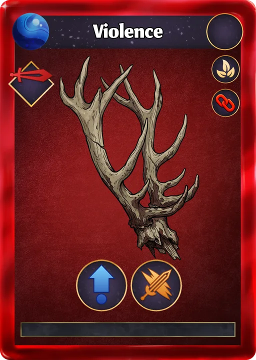
1 2 3 4 5 6Deals damage to enemies.
Protects you with a shield or damage reduction.
Boosts you.
Weakens enemies.
A special effect that does something unusual, such as transforming or copying another card.
A deal with a trade-off. Read the card text before you play it.

The material used to awaken other cards (see Awakening).
The card works on you instead of an enemy.
The card hits one chosen enemy.
The card hits every enemy in the fight.
The card targets everything in the fight.
Each card has a star rating from 0★ to 3★. More stars mean a higher level cap, more XP needed to level up, and a stronger version of the card when you awaken it. Normal cards start at level 1. Star Cards start at their top level.
Every card has a rarity: Common, Uncommon, Rare, Epic, or Legendary. You can see it in the card’s frame and border. Rarity does not change a card’s effect, mana cost, or chain. It affects two things:

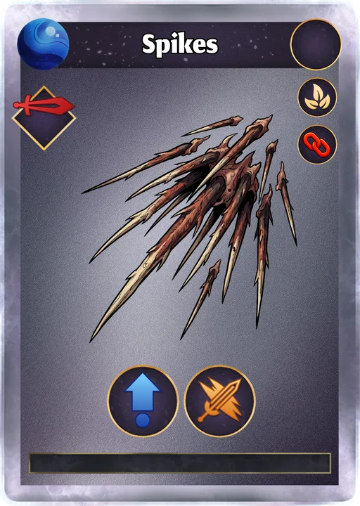
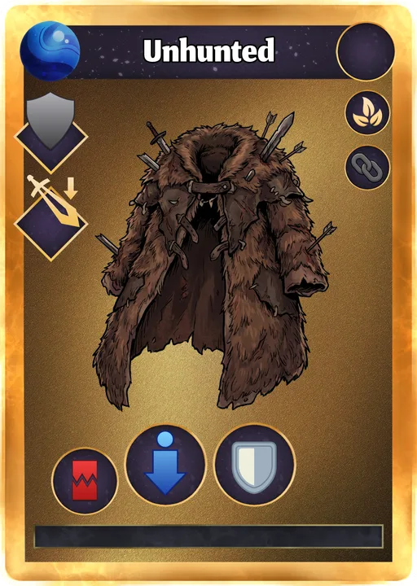
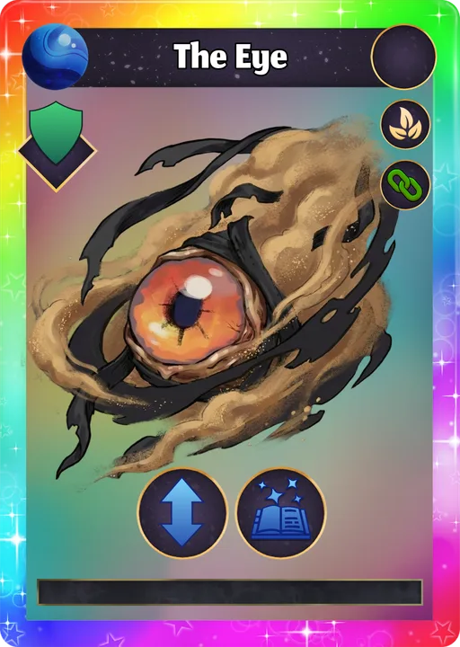
Mana is the fuel you spend to play cards. Think of it as your action budget for one turn.
At the start of each of your turns, your mana is set back to your full amount.
Each card shows its cost in the blue gem. You can only play cards you can pay for.
Mana does not carry over to your next turn. Spend it while you can.
If Confusion stops a card from working, you still lose its mana cost.
| Player level | Mana per turn | Cards drawn per turn |
|---|---|---|
| 1–2 | 3 | 3 |
| 3–10 | 3 | 4 |
| 11–14 | 4 | 4 |
| 15 and up | 4 | 5 |
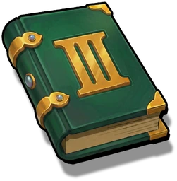
Cards level up by gaining XP. Every card starts at level 1 with 0 XP, unless it is a Star Card (those start at their top level).
A card’s top level depends on its stars: 10 + 5 × stars. So a 0★ card tops out at level 10, and a 3★ card at level 25.
| Stars | Top level | Common | Uncommon | Rare | Epic | Legendary |
|---|---|---|---|---|---|---|
| 0★ | 10 | 630 | 945 | 1,260 | 1,575 | 1,890 |
| 1★ | 15 | 1,330 | 1,995 | 2,660 | 3,325 | 3,990 |
| 2★ | 20 | 2,280 | 3,420 | 4,560 | 5,700 | 6,840 |
| 3★ | 25 | 3,480 | 5,220 | 6,960 | 8,700 | 10,440 |
Every card in your battle deck gets the same amount of XP: the total XP of the monsters you defeated on the run. Temporary cards and quest cards do not get it.
Open a card and use XP scrolls on it. The game picks the scrolls that waste the least XP. If you do not have enough scrolls, it uses them all.
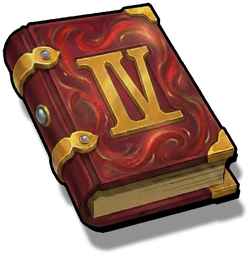
Scroll IVSome dungeon rooms have an Ancient Altar. It is a gamble: if it succeeds, the card’s total XP is doubled. If it fails, the card’s XP is reset to 0.

Awakening turns a card into a stronger version of itself, with one more star. Each awakening costs a copy of the card, plus coins.
It must be at its top level and below its maximum stars. Star Cards cannot be awakened.
Use one of these, at its top level:
Your Leadership must be higher than the card’s current stars. Then pay the coin cost below.
The material and the old card are used up. You get the next star version of the card at level 1 with 0 XP. If it was in your battle deck, it stays there.
| Awakening | Coins |
|---|---|
| 0★ → 1★ |  1,000 1,000 |
| 1★ → 2★ | 2,000 |
| 2★ → 3★ | 3,000 |
| Your player level | Leadership | Can awaken cards up to |
|---|---|---|
| 1–8 | 1 | 0★ cards |
| 9–19 | 2 | 1★ cards |
| 20 and up | 3 | 2★ cards |
Many cards have a colored chain link. When you play cards one after another in the same turn, their chains can link up. A linked chain gives the cards after the first one a bonus.
About a third of cards have no chain. Those cards are ignored by chains: they do not link, and they do not break a chain either. Yellow exists in the game art, but no card uses it yet.
| Outcome | When it happens | Bonus? |
|---|---|---|
| Same-color chain | 2 or more chained cards, all the same color. | Yes |
| Rainbow chain | 3 or more chained cards, every one a different color. | Yes |
| Broken chain | Any other mix, such as two different colors, or three cards where two match. | No |
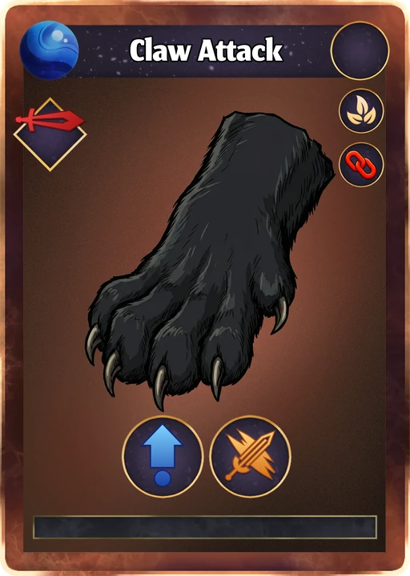
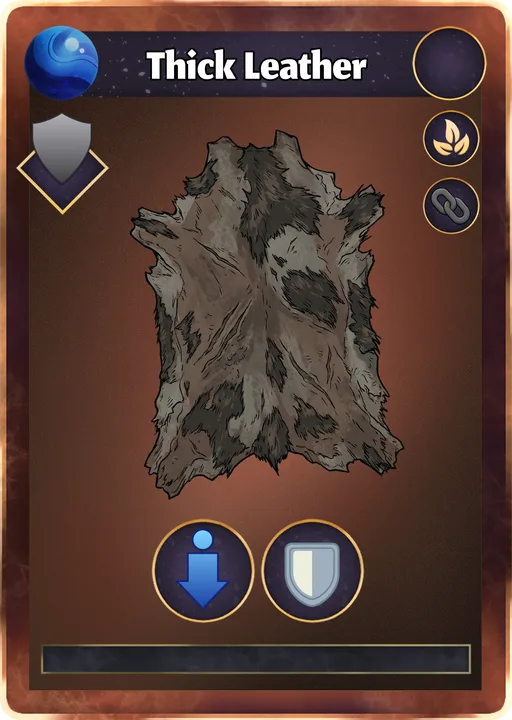
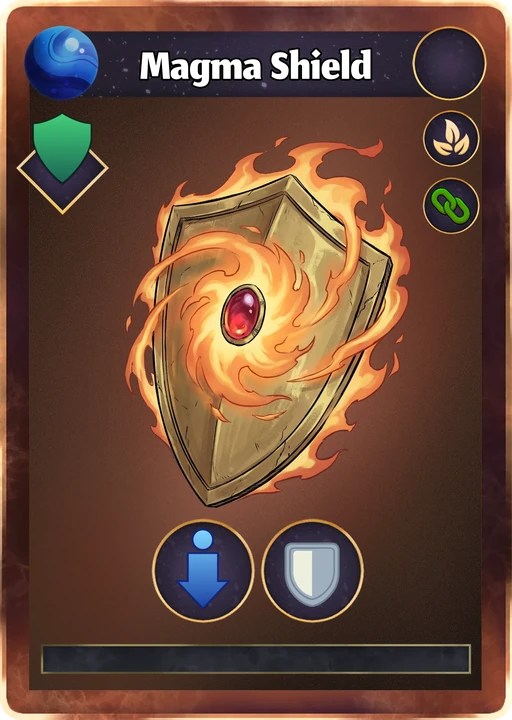
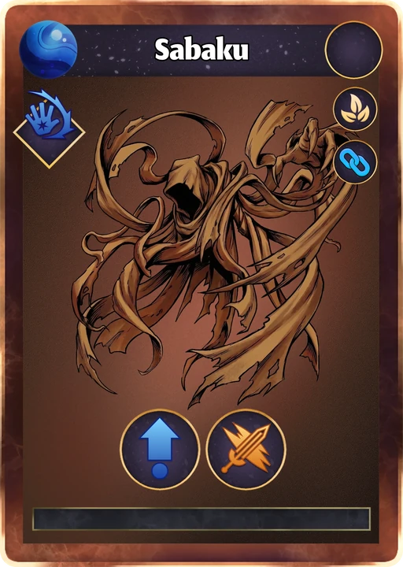
Only the chain color matters. Rarity does not change chains, so every example uses Common cards.
The first card in a chain never gets a bonus. It is the starting point. Each card after it gets a bonus on its first attack, defense, buff, or debuff. Spells and Pacts are not boosted. Each step adds the bigger of two amounts: a flat +1, +2, +3… or 10%, 20%, 30%… of that card’s value. The table shows a 5-damage card and a 30-damage card.
| Position in chain | Bonus on a 5-damage card | Bonus on a 30-damage card |
|---|---|---|
| 1st card | none | none |
| 2nd card | +1 | +3 |
| 3rd card | +2 | +6 |
| 4th card | +3 | +9 |
More card rules you will run into.
Once you play it, it is gone for the rest of that dungeon run.
If you do not play it during its turn, it fades away when your turn ends.
Cards that have X-cost will consume all your available mana when played. The effect is proportional to the mana consumed. They are powerful but should be played wisely.
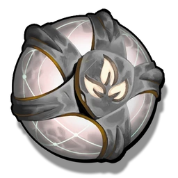
Each Card Soul is one card. At the Temple, you summon up to 6 cards at a time, using the souls of the class you pick. Each summoned card uses one soul.

Your battle deck must match your Deck Size exactly before you can enter a dungeon.
If you lose a run or quit it, the monster XP from that run does not go to your cards.